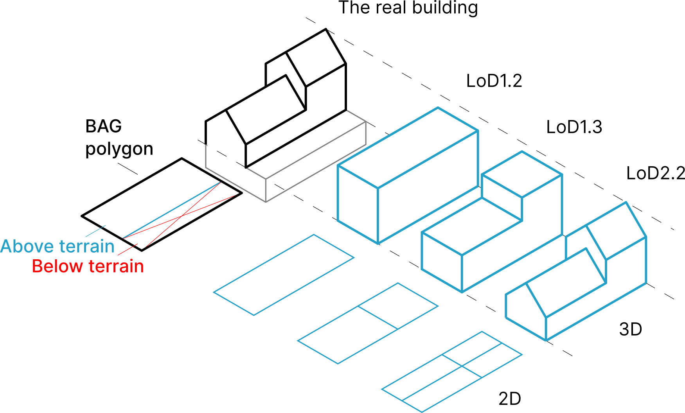
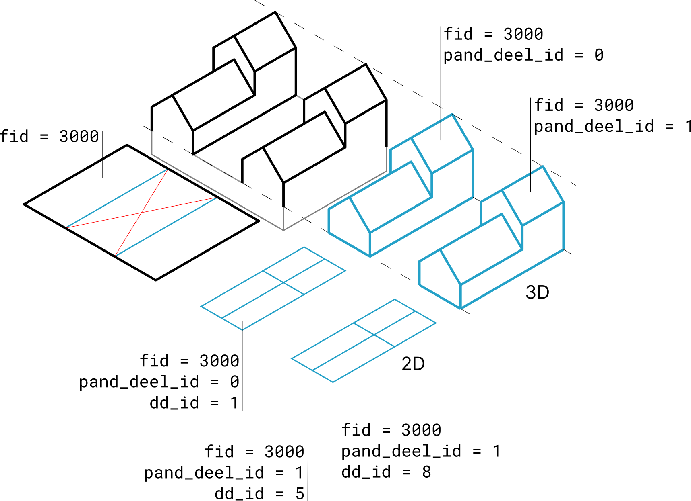

Data Layers¶

The diagram above shows the relation between a building in the real world and how is it modeled in the 3D BAG. The BAG models buildings with their largest extent as viewed from above. In practice this means a single 2D polygon per building, as it is displayed by the black polygon in the figure. Therefore, the BAG polygon may also include parts of the building that are below terrain level.
In order to create an accurate model of the above terrain parts of a building, we cut off the below terrain parts from the BAG polygon. We only consider the parts above the terrain, because we do not have data on the 3D extent of the parts below the terrain.
From the parts above terrain we then generate the 3D models in LoD1.2, 1.3 and 2.2. We realise that for some applications it is more suitable to read 2D polygons, and the building height information from attributes. Therefore, we also provide a 2D counterpart in each LoD.
lod11_replace
In case of greenhouses and large warehouses we do not cut off any parts of the BAG model, but take the polygon as is, and only generate an LoD1.1 model. Thus, such buildings only have an LoD1.1 model and are marked with the attribute value lod11_replace = true.
In case of the 2D models, the polygons represent the 2D projection of the roof planes of the 3D model. For LoD1.2 and LoD1.3, the 3D model can be fully reconstructed from the 2D model, by taking the 2D polygons and extruding each to one of their h_dak_* height values from their heights at surface level which is stored in h_maaiveld. However, this is not true for the LoD2.2 models, since here we have slanted roof planes, which cannot be represented by a 2D polygon and a single height value.
The 3D BAG has 6 geometric representations of a BAG object (a feature). The 6 representations are the 2D and 3D variants of the LoD1.2, LoD1.3 and LoD2.2 models of the feature. Therefore, the BAG models, which are stored on the pand layer, have a feature ID (fid), while their geometric representations have geometry IDs (gid). Depending on the representation, a single feature can have multiple geometry parts.
Some buildings have multiple disjoint part above the terrain, while they are connected with an underground garage for instance. In such cases, the above terrain parts are split into separate models with the same fid, and the pand_deel_id can identify these parts within the same feature.
The figure below illustrates the relation between the feature and the various geometry parts above terrain.

Calculation of height values¶
Each LoD of a building in 3D BAG has one ground height (h_maaiveld) and one or more roof heights (h_dak_*). All heights are given in EPSG:7415.
The ground height is determined as the 5th elevation percentile of all the AHN ground points that were found in a 4 meter radius around the BAG polygon of a building.
The roof heights (h_dak_*) are computed from the AHN points that that were detected to be part of a roof plane. Per roofpart we always compute the 0th (minimum height), 50th (median height), 70th, and 100th (maximum) percentiles. For instance h_dak_50p means the median height of the roof points. The figure below illustrates the detected roof points on a building. Notice that facade points are thus excluded from this computation.
{kind=link}
Heights in 2D vs 3D layers¶
For the 2D layers the heights are the statistcal aggregates as explained above and given as an attribute for each modelled roofpart.
For the 3D layers the heights are not given as attributes since they are explicitly modelled in the 3D geometry of the model. For the LoD1.2 and LoD1.3 layers (where each roofpart is modelled at a single height) the 70th percentile roof heights are used in the extrusion. In the LoD2.2 3D (lod22_3d) layer the roofs are directly modelled with the roof planes that were detected in the AHN point cloud.
Height picking in the 3D webviewer
If you click on a building in our 3D webviewer, you'll notice a height value shown in the bottom left corner of the screen. This is the height of the building at the clicked location as measured from the base of the building, ie. h_maaiveld is already subtracted from this.
ondergrond¶
The underground parts of a BAG polygon that were removed during the reconstruction from the LoD1.2, LoD1.3 and LoD2.2 models.
pand¶
Stores the attributes and geometry of the Pand object of the BAG, plus the attributes of the 3D BAG that relate to the whole building. Contains only those buildings that went into the reconstruction. The attribute fid is the unique, numeric ID of the objects. Besides being the primary key, fid is also used for joining the other layers to pand.
lod12_3d¶
A 3D model of the building parts above the terrain, modelled in LoD1.2. Can join to pand on fid.
lod12_2d¶
The 2D projection of the LoD1.2 model. The elevation of the detected LoD1.2 roof planes are stored as height attributes (h_dak_*). Only the above terrain parts of the BAG footprint are included. Can join to pand on fid.
lod13_3d¶
A 3D model of the building parts above the terrain, modelled in LoD1.3. Can join to pand on fid.
lod13_2d¶
The 2D projection of the LoD1.3 model. The elevation of the detected LoD1.3 roof planes are stored as height attributes (h_dak_*). Only the above terrain parts of the BAG footprint are included. Can join to pand on fid.
lod22_3d¶
A 3D model of the building parts above the terrain, modelled in LoD2.2. Can join to pand on fid.
lod22_2d¶
The 2D projection of the LoD2.2 model. The elevation of the detected LoD2.2 roof planes are stored as height attributes (h_dak_*). Note that the slanted roof planes of the 3D model cannot be reconstructed from these 2D polygons and height attributes. Only the above terrain parts of the BAG footprint are included. Can join to pand on fid.